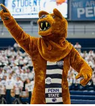
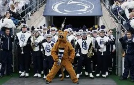
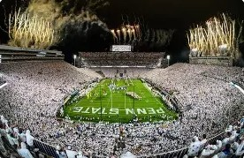

🧁 My Videos 🧁
The video above showcases the stunning Penn State campus in the winter time. It highlights Old Main which is a very popular and historic site for all current and past Penn Staters. It is located in the middle of campus and has an eerie gothic feel to it when walking past. Its not a creepy or scary place by any means, its just a peaceful, beautiful piece of architecture. The perfectly manicured lawn spanning in front of it is always busy with students socializing, walking to class, coming back from Down Town, or throwing a frisbee around in the nicer weather months.
Music song
One thing about me that you will come to find out is that I am a die hard Penn Stater through and through #WEARE. What can I say, it runs in my family. My dad and brother are both alums and although I did not graduate from the university, I did attend and will therefore continue to make it my entire personality. From the legendary White Out football games, to the television post game Creamry runs, Penn State pride runs deep in my familys blood. This pictures shown do not do the school justice nor the amount of school pride I have, however, once you step foot on Penn States campus, you will never look back.
 |
 |
 |